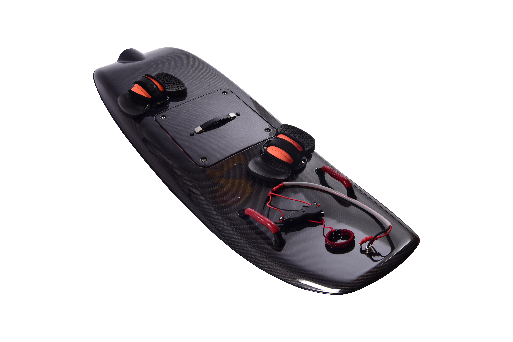
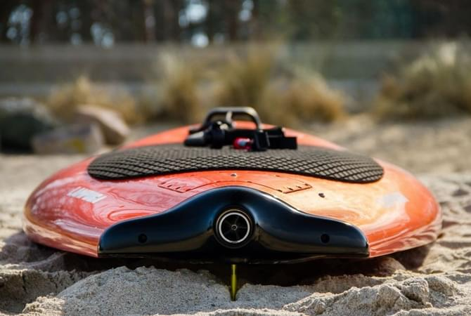
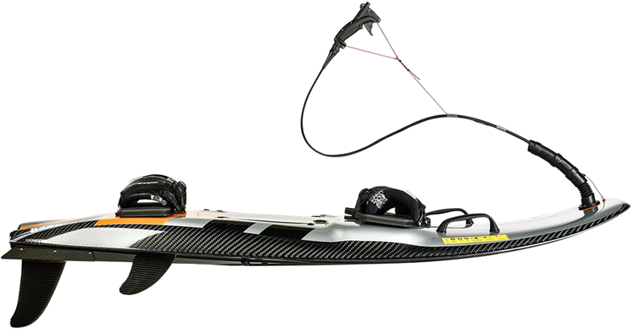

electric power - ESURFING

Серфинг никогда не был таким лёгким как с electric power - esurfing.
Электросёрфы открывают совершенно новые горизонты ощущений и возможностей. С е-сёрфом Esurfing, всё что вам нужно для удовольствия - это подходящий по размеру водоем. Начинающий вы или профессионал, Е-борды Esurfing подарят вам незабываемые мгновения.
Наши е-сёрфы не только лёгкие и быстрые, но просты в управлении и экологически безопасны.
Мотосерфинг – это новый, стремительно развивающийся спорт, это возможность заниматься серфингом где и когда угодно. Можно кататься на море, обгоняя волны и рассекать гладь озера — все это интересно по-своему. В любом месте, где есть водоём, доска для серфинга с мотором воплотит Ваши мечты о серфинге в реальность. Мотосерфинг, это чувство свободы и движения, любой водоем может стать вашим surf-спотом.

описание и принцип работы - ESURFING
Мотосёрф – это доска с мотором для сёрфинга по воде, предназначенная для активного отдыха или соревнований. Движение мотосёрфа происходит за счет вращения гребного винта в специальном водомете. Моторы расположены внутри корпуса и имеют особую горизонтальную компоновку. Корпус сёрфа изготовлен из легких и прочных композитных материалов. На сёрфе установлены крепления для ног и ручки для удобного старта. Управление скоростью происходит через нажатие курка газа на рукояти в руках у райдера мотосёрфа. Повороты выполняются за счет перемещения доски на левый или правый кант и переноса центра тяжести самим райдером.
Вес без батареи всего 14 килограмм
До 60 минут на одном заряде батареи. Замена батареи 2 минуты
Скорость до 60 км/час
Ветер и волны больше не нужны, вы самостоятельны
